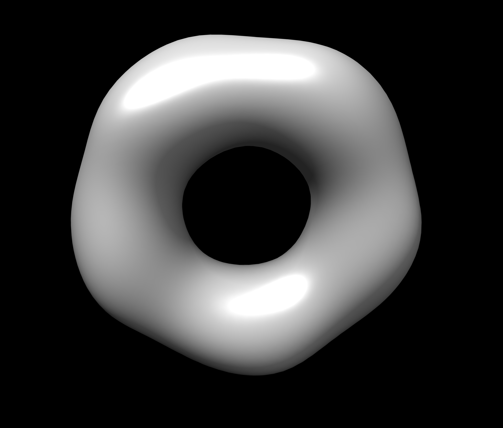
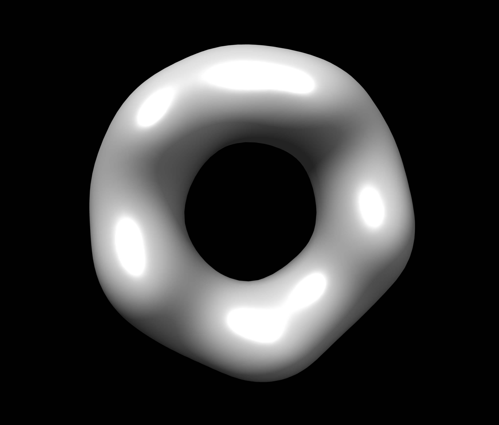
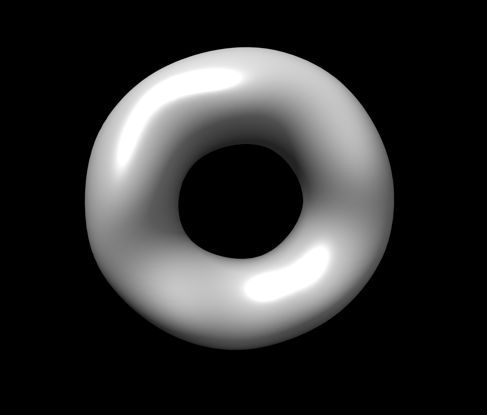

tutorial¶
sastbx.shapeup can be used for low-resolution shape determination given small angle scattering(SAXS) data. A search typically takes about one minute.
Type sastbx.shapeup in the command line, a brief usage will be given:
Usage:
sastbx.shapeup <target=target.iq> [rmax=rmax nmax=nmax scan=True*/False buildmap=True*/False pdb=pdbfile path=database_path]
The intensity profile is the only required input file (in theory)
Optional control parameters:
rmax : radius of the molecule (default: guessed from Rg)
nmax : maximum order of the zernike polynomial expansion (<=20 for precomputed database; 10 is the default)
qmax : maximum q value, beyond which the intensity profile will not be considered (default 0.20)
path : path to the database (this MUST be correct to execute the searching)
buildmap : build electron density map in xplor format, all the map will be aligned
pdb : any pdb model to be compared, and the maps will be aligned to the first pdb file
prefix : the output prefix
query {
target = None
.help = "the experimental intensity profile"
nmax = 10
.help = "maximum order of zernike polynomial: FIXED for the existing"
"database"
pdb_files = None
.help = "If provided, align this structure to the models"
qmax = 0.2
.help = "maximum q value where data beyond are disgarded"
q_level = 0.01
.help = "ratio between I_stop and I_max"
q_background = None
.help = "the intensity beyond q-background is treated as background"
rmax = None
.help = "estimated rmax of the molecule"
scan = True
.help = "scan for different rmax?"
prefix = "query"
.help = "the output prefix"
dbpath = None
.help = "the directory of database file, i.e., the pickle files"
db_choice = *pisa piqsi allpdb user
.help = "Data base name"
db_user_prefix = "mydb"
.help = "the prefix of database filename"
buildmap = True
.help = "align the top models and generate xplor files"
calc_cc = True
.help = "calculate Correlation Coefficient or just Coefficient distance"
smear = True
.help = "smear the calculated data to remove the spikes (fits better to"
"expt data)"
weight = *i s
.help = "the weights to be used in chi-score calculation"
delta_q = None
.help = "linear smearing distance, default is set to q_step*0.1"
ntop = 10
.help = "number of top hits returned per search"
fraction = 0.9
.help = "fraction in zernike moments calculation on 1-D axis: This is"
"FIXED, unless the database is changed"
scale_power = 4
.help = "Parameter controlling the scale factor calculation. Default"
"should be good."
}
Further explanation about usage:
In the current version, you need to specify the input intensity file and an estimated radius for a query. So the minimal command is in this format:
sastbx.shapeup target=input_file rmax=radius
Other parameters are optional.
Here gives an example to illustrate the usage.
The sastbx_path/source/sastbx/examples folder contains some iq profiles and the corresponding pdb data. Change to that directory, then type
sastbx.shapeup target=2e2g_znk.iq rmax=50
Radius and shape information are provided in the output.
In this example, you can see from the output that:
Best rmax found : 74.15 A
With no ntop specified, the output gives ten most similar models by default. Pairwise correlation coefficients are calculated and hierarchy clustering is performed with cutoff being 0.80. See this part of the output message:
10 elements, 1 clusters, @cutoff=0.800000
( ( ( ( ( ( ( ( 4 3 ) 5 ) 1 ) ( 7 2 ) ) 8 ) 10 ) 9 ) 6 )
mean_value, max_value, min_value, (max_value-min_value)
0.929799741509 0.998779418237 0.825467887358 0.173311530879
It says that 10 models are returned and they form only one group.
The returned models are ranked by similarity to the target.
Rank PDB_code cc (to the given model or the first model):
1 2ZCT
2 2H66 0.956
3 1QMV 0.987
4 1UUL 0.985
5 2PN8 0.985
6 2FB5 0.856
7 1E2Y 0.958
8 1J93 0.945
9 1U3D 0.916
10 2OB9 0.947
Since no pdb files here, column three lists cc to the first model, pdb_code 2ZCT in this example.
A ccp4 file is generated for each returned model. And models within the same cluster are averaged to a map. You can use chimera to view the models. Here gives the images of the top 3 models, from left to right.
  {kind=link}
{kind=link}
{kind=link}
One can provide a pdb file and compare the returned models with it.
sastbx.shapeup target=2e2g_znk.iq rmax=50 pdb=2e2g.pdb
Now the output shows cc to the model given by the pdb file.
Rank PDB_code cc (to the given model or the first model):
1 2ZCT 0.997
2 2H66 0.955
3 1QMV 0.983
4 1UUL 0.980
5 2PN8 0.981
6 2FB5 0.858
7 1E2Y 0.956
8 1J93 0.946
9 1U3D 0.921
10 2OB9 0.948
Similarity of the returned models to the target is implied by the high values of cc.
Compare the average_model(ave_1.ccp4, left) to the pdb file provided (2e2g.pdb, right):
{kind=link}
{kind=link}
Rmax: estimated vs PDB 74.1502812526 72.9867447533